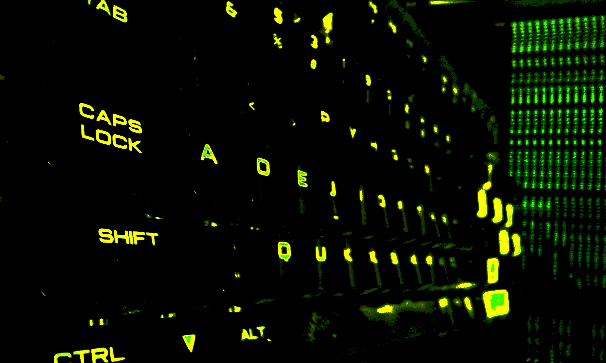
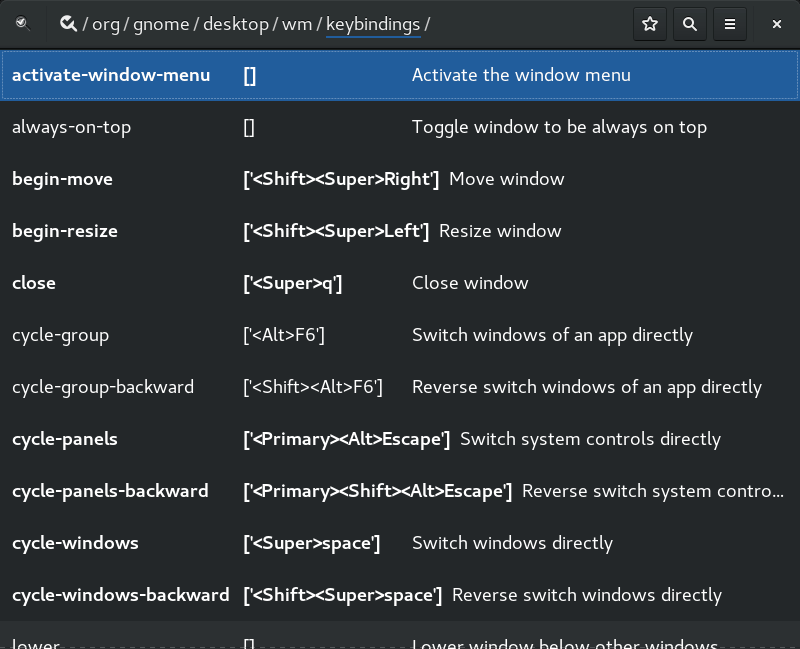

Gnome Keys

He utilizado gnome 2 (mas de un año en Debian 6), tambien xfce, lxde, dwm, ratpoison, stumpwm, kde 4, kde 5, fluxbox y openbox (y visto unity…) con todo, mi escritorio es y sera Gnome Shell
Lo unico que evita que Gnome Shell sea perfecto es la capacidad de personalizar el teclado a gusto, como puede ofreser kde, o eso creia.
Hace un par de dias comence a utilizar un emulador grafico nuevo llamado
terminix el cual tambien adolece de una personalizacion profunda de los atajos
de teclado, asi que me pase por su proyecto y les deje una lista de
deseos. Imbuido del espiritu coloborativo en forma de peticion, ocurrioseme
pasar y hacer lo mismo en el repositorio del proyecto gnome, que igual, cual
seres cosmicos-imaginarios cumplian mis solicitud. Oh, sorpresa! descubrir que
otros habian pasado ha solicitar lo mismo (en english) con bonito descenlace…
Gnome-Shell keybindings like a PRO
Abrimos un terminal. Muestro la version desde la que realizo las pruebas
$ gnome-shell --version
GNOME Shell 3.22.2
gnome posee un comando con el cual podemos configurar, mostrar y restaurar
(creo) todas las variables de las que haga uso el entorno, desde establecer con
que programa se debe abrir determinada extension a configurar los atajos de
teclado, su nombre es gsettings
Con el siguiente comando podemos ver cuantas variables pueden (o no) configurarse
$ gsettings list-recursively | wc -l
3057
Y con el siguiente, podemos ver cuantos atajos tenemos disponibles para interactuar con el entorno de escritorio
$ gsettings list-recursively org.gnome.desktop.wm.keybindings | wc -l
85
El esquema del comando es el siguiente
gsettings comando esquema argumentos
comando, es… el comandoesquemaes una ruta a la seccion que nos interesa conocer/modificar, en el comando anterior seriaorg->gnome->desktop->wm->keybindings. Existen muchos mas esquemas, pero solo me limitare a este.argumentosaqui van los nombres de valores de un esquema y/o una varible en especifico
Veamos un ejemplo:
$ gsettings get org.gnome.desktop.wm.keybindings toggle-fullscreen
@as []
el comando es get, es decir, optener. El esquema, son los atajos de entorno
de escritorio, la variable es toggle-fullscreen, es decir, optener que
combinacion activa el comando toggle-fullscreen
Cuando la salida es @as [] significa que el comando no esta asignado a ninguna
combinacion, vamos a asignar Super+KP_9
$ gsettings set org.gnome.desktop.wm.keybindings toggle-fullscreen "['<Super>KP_9']"
el comando es set, es decir, asignar, el esquema son los atajos de entorno
de escritorio, la variable es toggle-fullscreen y el valor que estamos
asignando es ['<Super>KP_9'] (las comillas son para escapar el ')
comprobemos que el cambio se ha realizado
$ gsettings get org.gnome.desktop.wm.keybindings toggle-fullscreen
['<Super>KP_9']
ahora, al presionar Super+KP_9 la ventana activa entra/sale del modo pantalla
completa.
para restaurar el comando a la configuracion inicial
$ gsettings reset org.gnome.desktop.wm.keybindings toggle-fullscreen
Si por alguna razon queremos reestablecer todos los comandos del entorno de escritorio a su configuracion inicial
$ gsettings reset-recursively org.gnome.desktop.wm.keybindings
Existen, otros dos modos de modificar una variable, si tenemos el comando
dconf, estableceriamos la variable toggle-fullscreen de esta manera
$ dconf write /org/gnome/desktop/wm/keybindings/toggle-fullscreen "['<Super>KP_9']"
Como vemos el esquema, ahora inicia y se separa mediante / hasta llegar a la
variable o directorio
de interes. El valor a establecer es identico a la
version de gsettings, mientras que los comandos pasan a ser list, reset y
write
finalmente tenemos una interfaz grafica de dconf llamada dconf-editor

podemos navegar entre los esquemas mediante el raton, clicando en la ruta que esta en el titulo de la ventana.
Gnome-Shell Mas alla del workspace #4
Bueno, todo esto tenia un proposito, la aplicacion de configuracion de gnome solo nos permite establecer atajos para los primeros cuatro escritorios, un problema cuando necesitas 5 o mas escritorios como en mi caso que utilizo almenos 7 con dos monitores.
Asi es como estableci los atajos a Super+KP_algo
# combinaciones para moverse al workspace x
gsettings set org.gnome.desktop.wm.keybindings switch-to-workspace-1 "['<Super>KP_7']"
gsettings set org.gnome.desktop.wm.keybindings switch-to-workspace-2 "['<Super>KP_8']"
gsettings set org.gnome.desktop.wm.keybindings switch-to-workspace-3 "['<Super>KP_9']"
gsettings set org.gnome.desktop.wm.keybindings switch-to-workspace-4 "['<Super>KP_4']"
gsettings set org.gnome.desktop.wm.keybindings switch-to-workspace-5 "['<Super>KP_5']"
gsettings set org.gnome.desktop.wm.keybindings switch-to-workspace-6 "['<Super>KP_6']"
gsettings set org.gnome.desktop.wm.keybindings switch-to-workspace-7 "['<Super>KP_1']"
gsettings set org.gnome.desktop.wm.keybindings switch-to-workspace-8 "['<Super>KP_2']"
gsettings set org.gnome.desktop.wm.keybindings switch-to-workspace-9 "['<Super>KP_3']"
gsettings set org.gnome.desktop.wm.keybindings switch-to-workspace-10 "['<Super>KP_0']"
# combinaciones para mover ventana al workspace x
gsettings set org.gnome.desktop.wm.keybindings move-to-workspace-1 "['<Alt><Super>KP_7']"
gsettings set org.gnome.desktop.wm.keybindings move-to-workspace-2 "['<Alt><Super>KP_8']"
gsettings set org.gnome.desktop.wm.keybindings move-to-workspace-3 "['<Alt><Super>KP_9']"
gsettings set org.gnome.desktop.wm.keybindings move-to-workspace-4 "['<Alt><Super>KP_4']"
gsettings set org.gnome.desktop.wm.keybindings move-to-workspace-5 "['<Alt><Super>KP_5']"
gsettings set org.gnome.desktop.wm.keybindings move-to-workspace-6 "['<Alt><Super>KP_6']"
gsettings set org.gnome.desktop.wm.keybindings move-to-workspace-7 "['<Alt><Super>KP_1']"
gsettings set org.gnome.desktop.wm.keybindings move-to-workspace-8 "['<Alt><Super>KP_2']"
gsettings set org.gnome.desktop.wm.keybindings move-to-workspace-9 "['<Alt><Super>KP_3']"
gsettings set org.gnome.desktop.wm.keybindings move-to-workspace-10 "['<Alt><Super>KP_0']"
lo mismo mediante dconf
dconf write /org/gnome/desktop/wm/keybindings/switch-to-workspace-1 "['<Super>KP_7']"
dconf write /org/gnome/desktop/wm/keybindings/switch-to-workspace-2 "['<Super>KP_8']"
dconf write /org/gnome/desktop/wm/keybindings/switch-to-workspace-3 "['<Super>KP_9']"
dconf write /org/gnome/desktop/wm/keybindings/switch-to-workspace-4 "['<Super>KP_4']"
dconf write /org/gnome/desktop/wm/keybindings/switch-to-workspace-5 "['<Super>KP_5']"
dconf write /org/gnome/desktop/wm/keybindings/switch-to-workspace-6 "['<Super>KP_6']"
dconf write /org/gnome/desktop/wm/keybindings/switch-to-workspace-7 "['<Super>KP_1']"
dconf write /org/gnome/desktop/wm/keybindings/switch-to-workspace-8 "['<Super>KP_2']"
dconf write /org/gnome/desktop/wm/keybindings/switch-to-workspace-9 "['<Super>KP_3']"
dconf write /org/gnome/desktop/wm/keybindings/switch-to-workspace-10 "['<Super>KP_0']"
dconf write /org/gnome/desktop/wm/keybindings/move-to-workspace-1 "['<Alt><Super>KP_7']"
dconf write /org/gnome/desktop/wm/keybindings/move-to-workspace-2 "['<Alt><Super>KP_8']"
dconf write /org/gnome/desktop/wm/keybindings/move-to-workspace-3 "['<Alt><Super>KP_9']"
dconf write /org/gnome/desktop/wm/keybindings/move-to-workspace-4 "['<Alt><Super>KP_4']"
dconf write /org/gnome/desktop/wm/keybindings/move-to-workspace-5 "['<Alt><Super>KP_5']"
dconf write /org/gnome/desktop/wm/keybindings/move-to-workspace-6 "['<Alt><Super>KP_6']"
dconf write /org/gnome/desktop/wm/keybindings/move-to-workspace-7 "['<Alt><Super>KP_1']"
dconf write /org/gnome/desktop/wm/keybindings/move-to-workspace-8 "['<Alt><Super>KP_2']"
dconf write /org/gnome/desktop/wm/keybindings/move-to-workspace-9 "['<Alt><Super>KP_3']"
dconf write /org/gnome/desktop/wm/keybindings/move-to-workspace-10 "['<Alt><Super>KP_0']"
nascii keys
Por ultimo dejo la lista de todos los atajos que tengo (o no) establecidos
gsettings set org.gnome.desktop.wm.keybindings activate-window-menu "[]"
gsettings set org.gnome.desktop.wm.keybindings always-on-top "[]"
gsettings set org.gnome.desktop.wm.keybindings begin-move "[]"
gsettings set org.gnome.desktop.wm.keybindings begin-resize "[]"
gsettings set org.gnome.desktop.wm.keybindings close "['<Super>q']"
gsettings set org.gnome.desktop.wm.keybindings cycle-group "['<Super>Home']"
gsettings set org.gnome.desktop.wm.keybindings cycle-group-backward "['<Alt><Super>Home']"
gsettings set org.gnome.desktop.wm.keybindings cycle-panels "['<Primary><Alt>Escape']"
gsettings set org.gnome.desktop.wm.keybindings cycle-panels-backward "['<Primary><Shift><Alt>Escape']"
gsettings set org.gnome.desktop.wm.keybindings cycle-windows "['<Super>space']"
gsettings set org.gnome.desktop.wm.keybindings cycle-windows-backward "['<Shift><Super>space']"
gsettings set org.gnome.desktop.wm.keybindings lower "[]"
gsettings set org.gnome.desktop.wm.keybindings maximize "['<Primary><Super>Up']"
gsettings set org.gnome.desktop.wm.keybindings maximize-horizontally "[]"
gsettings set org.gnome.desktop.wm.keybindings maximize-vertically "[]"
gsettings set org.gnome.desktop.wm.keybindings minimize "['<Super>KP_Subtract']"
gsettings set org.gnome.desktop.wm.keybindings move-to-center "[]"
gsettings set org.gnome.desktop.wm.keybindings move-to-corner-ne "[]"
gsettings set org.gnome.desktop.wm.keybindings move-to-corner-nw "[]"
gsettings set org.gnome.desktop.wm.keybindings move-to-corner-se "[]"
gsettings set org.gnome.desktop.wm.keybindings move-to-corner-sw "[]"
gsettings set org.gnome.desktop.wm.keybindings move-to-monitor-down "[]"
gsettings set org.gnome.desktop.wm.keybindings move-to-monitor-left "['<Alt><Super>Left']"
gsettings set org.gnome.desktop.wm.keybindings move-to-monitor-right "['<Alt><Super>Right']"
gsettings set org.gnome.desktop.wm.keybindings move-to-monitor-up "[]"
gsettings set org.gnome.desktop.wm.keybindings move-to-side-e "[]"
gsettings set org.gnome.desktop.wm.keybindings move-to-side-n "[]"
gsettings set org.gnome.desktop.wm.keybindings move-to-side-s "[]"
gsettings set org.gnome.desktop.wm.keybindings move-to-side-w "[]"
gsettings set org.gnome.desktop.wm.keybindings move-to-workspace-1 "['<Alt><Super>KP_7']"
gsettings set org.gnome.desktop.wm.keybindings move-to-workspace-2 "['<Alt><Super>KP_8']"
gsettings set org.gnome.desktop.wm.keybindings move-to-workspace-3 "['<Alt><Super>KP_9']"
gsettings set org.gnome.desktop.wm.keybindings move-to-workspace-4 "['<Alt><Super>KP_4']"
gsettings set org.gnome.desktop.wm.keybindings move-to-workspace-5 "['<Alt><Super>KP_5']"
gsettings set org.gnome.desktop.wm.keybindings move-to-workspace-6 "['<Alt><Super>KP_6']"
gsettings set org.gnome.desktop.wm.keybindings move-to-workspace-7 "['<Alt><Super>KP_1']"
gsettings set org.gnome.desktop.wm.keybindings move-to-workspace-8 "['<Alt><Super>KP_2']"
gsettings set org.gnome.desktop.wm.keybindings move-to-workspace-9 "['<Alt><Super>KP_3']"
gsettings set org.gnome.desktop.wm.keybindings move-to-workspace-10 "['<Alt><Super>KP_0']"
gsettings set org.gnome.desktop.wm.keybindings move-to-workspace-11 "[]"
gsettings set org.gnome.desktop.wm.keybindings move-to-workspace-12 "[]"
gsettings set org.gnome.desktop.wm.keybindings move-to-workspace-down "['<Alt><Super>Page_Down']"
gsettings set org.gnome.desktop.wm.keybindings move-to-workspace-last "['<Alt><Super>End']"
gsettings set org.gnome.desktop.wm.keybindings move-to-workspace-left "[]"
gsettings set org.gnome.desktop.wm.keybindings move-to-workspace-right "[]"
gsettings set org.gnome.desktop.wm.keybindings move-to-workspace-up "['<Alt><Super>Page_Up']"
gsettings set org.gnome.desktop.wm.keybindings panel-main-menu "['<Super>s', '<Alt>F1']"
gsettings set org.gnome.desktop.wm.keybindings panel-run-dialog "['<Alt>F2']"
gsettings set org.gnome.desktop.wm.keybindings raise "[]"
gsettings set org.gnome.desktop.wm.keybindings raise-or-lower "[]"
gsettings set org.gnome.desktop.wm.keybindings set-spew-mark "[]"
gsettings set org.gnome.desktop.wm.keybindings show-desktop "['<Super>d']"
gsettings set org.gnome.desktop.wm.keybindings switch-applications "['<Super>BackSpace', '<Alt>Tab']"
gsettings set org.gnome.desktop.wm.keybindings switch-applications-backward "['<Shift><Super>BackSpace', '<Shift><Alt>Tab']"
gsettings set org.gnome.desktop.wm.keybindings switch-group "[]"
gsettings set org.gnome.desktop.wm.keybindings switch-group-backward "[]"
gsettings set org.gnome.desktop.wm.keybindings switch-input-source "['<Super>F4']"
gsettings set org.gnome.desktop.wm.keybindings switch-input-source-backward "[]"
gsettings set org.gnome.desktop.wm.keybindings switch-panels "['<Control><Alt>Tab']"
gsettings set org.gnome.desktop.wm.keybindings switch-panels-backward "['<Shift><Control><Alt>Tab']"
gsettings set org.gnome.desktop.wm.keybindings switch-to-workspace-1 "['<Super>KP_7']"
gsettings set org.gnome.desktop.wm.keybindings switch-to-workspace-2 "['<Super>KP_8']"
gsettings set org.gnome.desktop.wm.keybindings switch-to-workspace-3 "['<Super>KP_9']"
gsettings set org.gnome.desktop.wm.keybindings switch-to-workspace-4 "['<Super>KP_4']"
gsettings set org.gnome.desktop.wm.keybindings switch-to-workspace-5 "['<Super>KP_5']"
gsettings set org.gnome.desktop.wm.keybindings switch-to-workspace-6 "['<Super>KP_6']"
gsettings set org.gnome.desktop.wm.keybindings switch-to-workspace-7 "['<Super>KP_1']"
gsettings set org.gnome.desktop.wm.keybindings switch-to-workspace-8 "['<Super>KP_2']"
gsettings set org.gnome.desktop.wm.keybindings switch-to-workspace-9 "['<Super>KP_3']"
gsettings set org.gnome.desktop.wm.keybindings switch-to-workspace-10 "['<Super>KP_0']"
gsettings set org.gnome.desktop.wm.keybindings switch-to-workspace-11 "[]"
gsettings set org.gnome.desktop.wm.keybindings switch-to-workspace-12 "[]"
gsettings set org.gnome.desktop.wm.keybindings switch-to-workspace-down "['<Super>Page_Down']"
gsettings set org.gnome.desktop.wm.keybindings switch-to-workspace-last "['<Super>End']"
gsettings set org.gnome.desktop.wm.keybindings switch-to-workspace-left "[]"
gsettings set org.gnome.desktop.wm.keybindings switch-to-workspace-right "[]"
gsettings set org.gnome.desktop.wm.keybindings switch-to-workspace-up "['<Super>Page_Up']"
gsettings set org.gnome.desktop.wm.keybindings switch-windows "['<Super>Return']"
gsettings set org.gnome.desktop.wm.keybindings switch-windows-backward "['<Shift><Super>Return']"
gsettings set org.gnome.desktop.wm.keybindings toggle-above "[]"
gsettings set org.gnome.desktop.wm.keybindings toggle-fullscreen "['<Super>KP_Multiply']"
gsettings set org.gnome.desktop.wm.keybindings toggle-maximized "['<Super>KP_Divide']"
gsettings set org.gnome.desktop.wm.keybindings toggle-on-all-workspaces "[]"
gsettings set org.gnome.desktop.wm.keybindings toggle-shaded "[]"
gsettings set org.gnome.desktop.wm.keybindings unmaximize "[]"